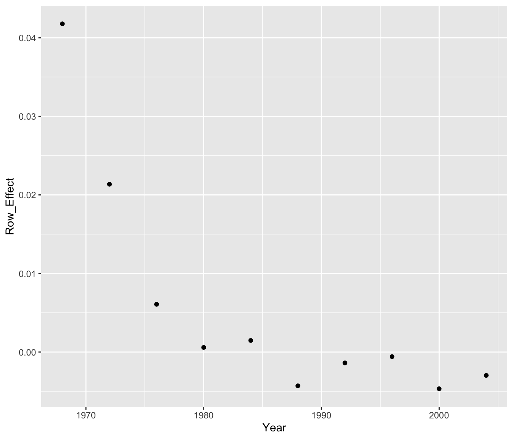

19 Multiplicative Fit
We have illustrated the use of median polish to perform an additive fit to a two-way table. But sometimes, a multiplicative fit rather than an additive fit is appropriate. Here we illustrate fitting and interpreting a multiplicative fit.
19.1 Meet the data
A fascinating data set are statistics collected from the Olympic games through the years. Here we focus on women swimming results – in particular, the times of the winning swimmer in the women freestyle swimming race for the 100, 200, 400, 800 meter distances for the most nine recent Summer Olympics. (The source of the data is the ESPN Sports Almanac.)
We present the data as a two-way table – time (in seconds) classified by year and distance.
library(LearnEDAfunctions)
times <- olympics.swim[, -1]
row.names(times) <- olympics.swim[, 1]
times## X100m X200m X400m X800m
## 1968 60.00 130.50 271.80 564.00
## 1972 58.59 123.56 259.44 533.68
## 1976 55.65 119.26 249.89 517.14
## 1980 54.79 118.33 248.76 508.90
## 1984 55.92 119.23 247.10 504.95
## 1988 54.93 117.65 243.85 500.20
## 1992 54.65 117.90 247.18 505.52
## 1996 54.50 118.16 247.25 507.89
## 2000 53.83 118.24 245.80 499.67
## 2004 53.84 118.03 245.34 504.54What patterns do we expect to see in this table? Certainly, we expect the times to get larger for the longer distances. Also, we might expect to see some decrease in the winning times as a function of year. There are improvements in training and swimming technique that can lead to better race times.
19.2 An additive model isn’t suitable
If we think about the structure of this table, it should be clear that an additive model is not the best fit for these data. If the table were additive, then one would expect the difference between the times in the first two columns to be a constant across rows. Likewise, the difference between any two columns should be a constant for each row. But what is the expected relationship between the times for the 100 m and 200 m races? Since the 200 meter race is twice the distance, you would expect the winning time to be roughly twice the winning time for the 100 meter race. So the relationship between the columns of the table is multiplicative, rather than additive.
A multiplicative fit is equivalent to an additive fit to the logs
Here is a multiplicative model for these data: \[ TIME = [COMMON] \times [ROW \, EFFECT] \times [ COL \,EFFECT] \times [RESIDUAL] \] This model says that one row of the table will be a constant multiple of another row of the table. Similarly, we expect one column, say 400 m, to be a constant multiple of another column like 100 m. Also, notice that the residual is a multiplicative term rather than an additive term that we saw in the additive fit.
How do we fit this seemingly more complicated model? Easy – we change this multiplicative model to an additive one by taking logs: \[ \log TIME = \log \, COMMON + \log ROW \, EFFECT + \log COL \, EFFECT + \log RESIDUAL \]
Here is our strategy for fitting this multiplicative model.
- Take logs (base 10) of our response – here the times.
- We fit an additive model using median polish. From this fit, we find the COMMON, row effects, and column effects.
- We convert the additive fit back to a multiplicative fit by exponentiating the model terms – that is, taking all terms to the 10th power.
19.3 Fitting our model to the data
We start by taking the logs (base 10) of our winning times – the two-way table of log times is shown below.
log.times <- log10(times)
log.times## X100m X200m X400m X800m
## 1968 1.778151 2.115611 2.434249 2.751279
## 1972 1.767823 2.091878 2.414037 2.727281
## 1976 1.745465 2.076495 2.397749 2.713608
## 1980 1.738701 2.073095 2.395781 2.706632
## 1984 1.747567 2.076386 2.392873 2.703248
## 1988 1.739810 2.070592 2.387123 2.699144
## 1992 1.737590 2.071514 2.393013 2.703738
## 1996 1.736397 2.072470 2.393136 2.705770
## 2000 1.731024 2.072764 2.390582 2.698683
## 2004 1.731105 2.071992 2.389768 2.702896Using R, we apply median polish to these data. The output of this additive fit are the common value, the row effects (reff), the column effects (ceff), and the residuals. We show all of these terms in the following table.
additive.fit <- medpolish(log.times)## 1: 0.0857004
## 2: 0.07810789
## Final: 0.07788071options(width=60)
additive.fit##
## Median Polish Results (Dataset: "log.times")
##
## Overall: 2.233155
##
## Row Effects:
## 1968 1972 1976 1980
## 0.0417754242 0.0213550737 0.0060742663 0.0005843024
## 1984 1988 1992 1996
## 0.0014745868 -0.0042972121 -0.0013812874 -0.0005843024
## 2000 2004
## -0.0046712810 -0.0029718761
##
## Column Effects:
## X100m X200m X400m X800m
## -0.4946103 -0.1597096 0.1595565 0.4727421
##
## Residuals:
## X100m X200m X400m X800m
## 1968 -0.00216840 0.00039015 -2.3702e-04 3.6070e-03
## 1972 0.00792420 -0.00292211 -2.9188e-05 2.9188e-05
## 1976 0.00084668 -0.00302440 -1.0364e-03 1.6372e-03
## 1980 -0.00042723 -0.00093437 2.4852e-03 1.5148e-04
## 1984 0.00754835 0.00146602 -1.3129e-03 -4.1229e-03
## 1988 0.00556259 0.00144421 -1.2911e-03 -2.4558e-03
## 1992 0.00042723 -0.00054984 1.6836e-03 -7.7704e-04
## 1996 -0.00156342 -0.00039015 1.0096e-03 4.5730e-04
## 2000 -0.00284856 0.00399077 2.5421e-03 -2.5421e-03
## 2004 -0.00446730 0.00151935 2.9188e-05 -2.9188e-05To demonstrate the fit, note that the log time for the 100 m race in 1968 is 1.77815. We can express this log time as \[ 1.77815 = 2.23315 + .04178 - .49461 - .00217 \] where
- 2.23315 is the common value
- .04178 is the additive effect due to the year 1968
- \(-.49461\) is the additive effect due to the 100m swim
- \(-.00217\) is the residual (what’s left of the data after taking out the additive fit)
To get a fit for the original time data, we take the common, row effects, column effects, and residuals each to the 10th power. For example, we reexpress the common value 2.23359 to \(10^{2.2339}\) = 171.233 and the first row effect .0410 to \(10^{.0410}\) = 1.0990. If we do this operation to all terms, we get the following table of fits and residuals:
COMMON <- 10 ^ additive.fit$overall
ROW <- 10 ^ additive.fit$row
COL <- 10 ^ additive.fit$col
RESIDUAL <- 10 ^ additive.fit$residual
COMMON## [1] 171.0624ROW## 1968 1972 1976 1980 1984 1988
## 1.1009698 1.0504009 1.0140848 1.0013463 1.0034011 0.9901541
## 1992 1996 2000 2004
## 0.9968245 0.9986555 0.9893016 0.9931804COL## X100m X200m X400m X800m
## 0.3201767 0.6922937 1.4439644 2.9699019RESIDUAL## X100m X200m X400m X800m
## 1968 0.9950195 1.0008988 0.9994544 1.0083400
## 1972 1.0184136 0.9932942 0.9999328 1.0000672
## 1976 1.0019514 0.9930603 0.9976164 1.0037769
## 1980 0.9990168 0.9978508 1.0057388 1.0003489
## 1984 1.0175326 1.0033813 0.9969815 0.9905516
## 1988 1.0128907 1.0033309 0.9970316 0.9943613
## 1992 1.0009842 0.9987347 1.0038841 0.9982124
## 1996 0.9964066 0.9991020 1.0023273 1.0010535
## 2000 0.9934624 1.0092314 1.0058706 0.9941637
## 2004 0.9897664 1.0035046 1.0000672 0.999932819.4 Interpreting the fit
Remember that we have performed an additive fit to the log times which is equivalent to a multiplicative fit to the times. Remember the log time for the 200 m swim in 1968 was represented as the sum \[ 1.77815 = 2.23315 + .04178 - .49461 - .00217 \] Equivalently, the time for the 200 m swim in 1968 is expressible as the product \[ 10^{1.77815} = 10^{2.23315} \times 10^{.04178} \times 10^{- .49461} \times 10^{-.00217} \] or (looking at the output from the table) \[ 60 = 171.062 \times 1.1010 \times .3202 \times .9950 \] Looking at a different cell in the table, say the 800 m time in 1980 (508.90 seconds). We can represent this time as
[common time] x [effect due to 1980] x [effect due to 800 m] x [residual]\[ = 171.062 \times 1.0013 \times 2.9699 \times 1.0003 \]
Here we have (close to) a perfect fit, which means that the observed time is exactly equal to the fitted time, and the (multiplicative) residual is approximately equal to 1.
Let’s interpret the fit shown below:
YEAR 100m 200m 400m 800m REFF
1968 1.1010
1972 1.0504
1976 1.0141
1980 1.0013
1984 1.0034
1988 0.9902
1992 0.9968
1996 0.9987
2000 0.9893
2004 0.9932
CEFF 0.3202 0.6923 1.4440 2.9699 171.062If we wish to get fitted times for each year, we multiply the row effects (reff) by the common value to get the following table. We use the abbreviation RFITS to stand for the row fits.
YEAR 100m 200m 400m 800m RFITS
1968 188.33
1972 179.68
1976 173.47
1980 171.29
1984 171.64
1988 169.38
1992 170.52
1996 170.83
2000 169.23
2004 169.90
CEFF 0.3202 0.6923 1.4440 2.9699 If we wish to compare years, then we look at ratios (not differences). For example, comparing 1968 and 2000, the ratio of the corresponding row fits is 188.33/169.23 = 1.11. So we can say that times in 1968 were on the average 11% slower than they were in the year 2000.
Likewise, what are the effects of the different distances? Since the 200m, 400m, 800m distances are 2, 4, 8 times longer, respectively, than the 100m distance, it might be reasonable to expect column effect ratios of 2, 4, and 8. The estimated ratios from the table are shown below:
| Distance | 100m | 200m | 400m |
|---|---|---|---|
| Column Effect | .3202 | .6923 | 1.4440 |
| Effect / Effect (100m) | 1 | 2.16 | 4.51 |
Note that we see a fatigue effect ??? the 200m time is barely twice as long as the 100m, but the 400m time is 4.5 times as long as the 100m time, and the 800 time is over 9 times long.
To gain a better understanding of the row and column effects, we can plot them. In the top graph of the below figure, we have plotted the row effects for the log time against the year. In the bottom graph, we’ve plotted the column effects (again for log time) against the logarithm of the length of the race.
Year <- seq(1968, 2004, by=4)
Log.Distance <- log10(c(100, 200, 400, 800))
ggplot(data.frame(Year, Row_Effect = additive.fit$row),
aes(Year, Row_Effect)) + geom_point()
ggplot(data.frame(Log.Distance,
Col_Effect = additive.fit$col),
aes(Log.Distance, Col_Effect)) +
geom_point()
From the graphs, we see
- There was a clear decrease in log time from 1968 to 1980, but since 1980 the times have been pretty constant
- As we know, the log times increase linearly as a function of log distance. But this graph doesn’t show the fatigue effect – one could discover this by means of a residual plot from a linear fit to this graph.
19.5 Interpreting the residuals
After we interpret the fit, we look at the residuals to find an interesting pattern or to detect unusual observations. In this multiplicative fit, a residual of 1 corresponds to a perfect fit in that cell, so we are looking for residual values that deviate from 1.
round(RESIDUAL, 2)## X100m X200m X400m X800m
## 1968 1.00 1.00 1.00 1.01
## 1972 1.02 0.99 1.00 1.00
## 1976 1.00 0.99 1.00 1.00
## 1980 1.00 1.00 1.01 1.00
## 1984 1.02 1.00 1.00 0.99
## 1988 1.01 1.00 1.00 0.99
## 1992 1.00 1.00 1.00 1.00
## 1996 1.00 1.00 1.00 1.00
## 2000 0.99 1.01 1.01 0.99
## 2004 0.99 1.00 1.00 1.00I look for residuals that are either small or .99 or larger than 1.01 – three ``large” residuals are highlighted. In the 100m races of 1972, 1984, and 1988, the winning times were a bit slow considering the year and the length of the race.